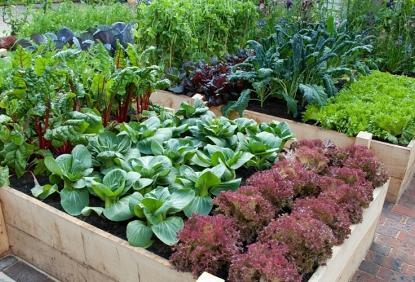
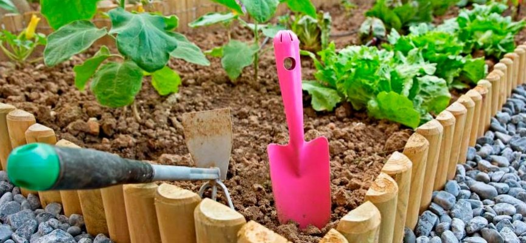
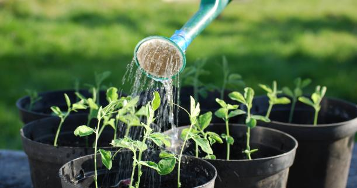
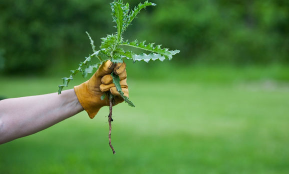
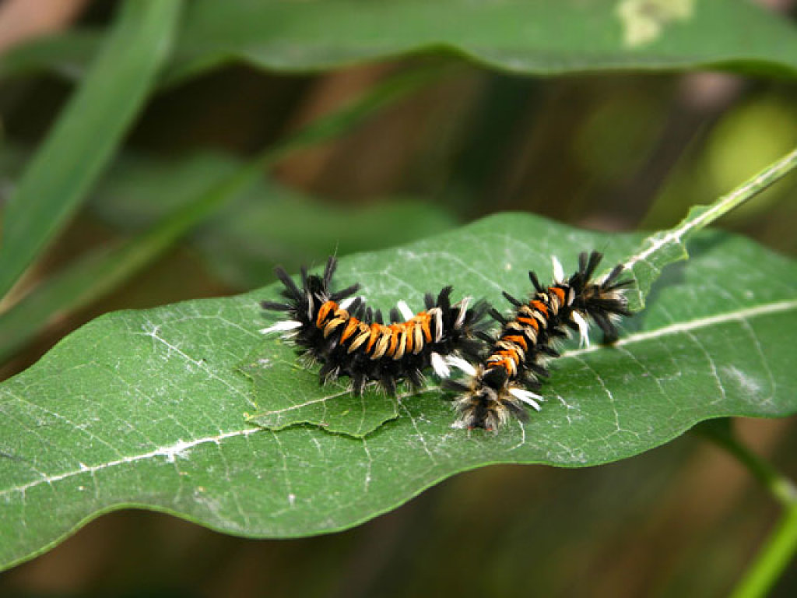
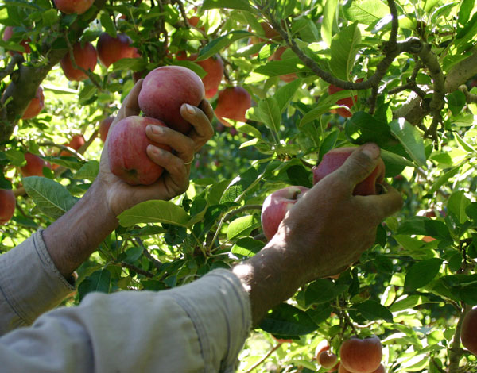

Start an Organic Garden
we'll show you how.
You've been trying to eat more organic foods, both to decrease the amount of pesticides you and your family consume, and to help protect the environment from overloading with toxic chemicals. But organics can get a bit expensive, we know. Luckily, there's a way to grow your own delicious, fresh produce, while having fun and learning at the same time: organic gardening! Don't know where to start? It is possible to hire someone to install and maintain a beautiful organic garden for you. But most of us can roll up our sleeves with a surprisingly small amount of effort. Remember, you can start small, even with just a single plant or two. Don't worry if things aren't perfect right away.
Preparing the Soil
In order to get the best results with your new organic garden, you'll want to make sure the soil is properly conditioned. You have to eat, and so do plants, so make sure your veggies get lots of fresh nutrients. Good healthy soil helps build up strong, productive plants. Chemical soil treatments can not only seep into your food, but they can also harm the beneficial bacteria, worms and other microbes in the soil. The best way to gauge the quality of your soil is to get it tested. You can get a home testing kit, or better, send a sample to your local agricultural extension office. For a modest fee you'll get a complete breakdown of pH and nutrient levels, as well as treatment recommendations (be sure to tell them you're going organic). That way you can tailor your gardening program. Typically, it's best to test in the fall, and apply any organic nutrients before winter.
Make compost
All gardens benefit from compost -- and preferably you can make your own on site. Hey, it's free! Compost feeds plants, helps conserve water, cuts down on weeds, and keeps food and yard waste out of landfills (where it produces methane), instead turning garbage into "black gold." Spread compost around plants, mix with potting soil, use to bolster struggling plants…it's hard to use too much!
Start
1. To get started, measure out a space at least three feet square. Your compost heap can be a simple pile or contained within a custom pen or bin (some can be rotated, to improve results).
2. Add alternating layers of carbon (or brown) material -- leaves and garden trimmings -- and nitrogen (or green) material -- such as kitchen scraps and manure, with a thin layer of soil in between.
3. Top off the pile with four to six inches of soil. Turn the pile as new layers are added and water to keep (barely) moist, in order to foster microbe action. You should get good compost in as little as two months (longer if it's cold).
4. A properly maintained compost pile shouldn't smell. But if it does add more dry carbon material (leaves, straw, or sawdust) and turn it more frequently.
5. Even if you live in a city, you can do some composting under your counter with a tidy worm kit, or partner with a community garden.
Choose the Right Plants
It really pays to select plants that will thrive in your specific micro-conditions. As a general guide don't forget to check the USDA's Hardiness Zones (which have recently been updated by the National Arbor Day Foundation due to climate change). Choose plants that will be well adjusted to each spot, in terms of light, moisture, drainage and soil quality. Most gardens have gradations in these variables. The happier your plants are, the more resistant they'll be to attackers.

Plant Crops in Wide Beds
Plants that you will be harvesting, such as vegetables or cutting flowers, should be grouped tightly in beds that you don't walk on (raised beds work great). Grouping reduces weeding and water waste, and helps you target compost and nutrients. Easier path maintenance helps lead to healthy soil. Ample space between rows helps promote air circulation, which repels fungal attacks.
If you have limited space and time, and want the highest returns of fresh organic produce, these plants are typically winners:
1. Indeterminate Tomatoes. So named because the vines keep getting bigger and producing new fruit until they are felled by frost.
2. Non-Hybrid (Old-Fashioned) Pole Beans. They keep growing and producing 'til frost -- assuming you keep them picked.
3. Zucchini. Everything they say about avalanches of zucchini is true, especially of hybrid varieties.
4. Swiss Chard. You can keep breaking off outer leaves for months, and every picking will be tender as long as plants get enough water.
5. Tall Snow Peas and Sugarsnaps. They grow readily and produce delicious rewards.

Proper Watering
The best time to water plants is usually in the morning. Why? Mornings tend to be cool and without strong winds, so the amount of water lost to evaporation is reduced. If you water in the evening plants stay damp over night, making them more likely to be damaged by fungal and bacterial diseases.
Ideally, you want to water the roots, not the greenery, which is easily damaged. A drip or soak system can work great, or just carefully water the bases of plants by hand.
Most experts recommend substantial, infrequent watering for established plants, typically a total of about one inch of water per week (including rain). One or two applications a week encourages deeper rooting, which promotes stronger plants. To avoid shocking tender greenery, try to use water at or near air temperature (Collected rainwater is best).
With population growth and climate change putting increasing pressure on our precious freshwater supplies, it is becoming more important than ever to save water.

Weeding
Ah weeding. Even if you live in the Biosphere, you'll still get weeds, since their tiny seeds are pervasive. Pulling weeds by hand may sound like hard work -- and it can be -- but it also can be good exercise, and gets you outside in the fresh air. You don't want to pour toxic chemicals on your food, or where your children and pets play, right?
Reduce the number of weeds you have to contend with by applying mulch (which also helps protect the soil). Organic mulch that will rot down into the soil is almost always preferable to landscape fabric, although burlap and other materials can work in a pinch. Straw is cheap but doesn't last long. Wood chips are nice, but can get pricey. Many people opt to use lawn clippings, although it should be noted that because they are high in nitrogen, clippings should only be used on plants that need a lot of the nutrient, such as squash and lettuce.
If you get tired of weeding or aren't able to bend over, consider hiring some neighborhood kids. It's a good way to get to know others in your community. Remember too that raised beds can be made wheelchair accessible, and others can take advantage of wheeled stools, arthritis-friendly gardening tools and other equipment.

Protect Plants Without Toxic Pesticides
If your plants are being assaulted by pests, it may be a sign of other problems, so the first thing you should do is make sure they are getting enough light, nutrients and moisture. Also remember that a diverse garden helps prevent pests, by limiting the amount of one type of plant offered up to enemies, and boosting biodiversity.
It's a good thing to foster natural predators in your garden, such as frogs, toads, lizards, birds, and even bats. Beneficial insects can be your best friends, especially lady bugs (many nurseries even sell cans of them, though it's true there's a high probability they won't stick around). Leave a small source of water out to attract friendly predators. It's also a good idea to grow plants with small blossoms, such as sweet alyssum and dill, which attract predatory insects. Nets and row covers can also work

Harvesting
Don't forget to harvest the fruits of your labor! Fresh organic produce also makes great gifts, educating your friends, neighbors and coworkers. Generally, the more you harvest, the more your plants will produce for you.
During peak harvest season, you'll likely find that it's best to check your garden every day. Got herbs? If you use them fresh pick them right before you need them. But if you'll be drying and storing them, it's best to wait until just before they flower, since they'll have the most flavor. Gather all herbs except basil in mid morning, shortly after dew has dried. Harvest basil in the late afternoon, since it will last longer after some time in the sun. It's best not to wash herbs before you dry or use them, since that can leach flaor (extra incentive for growing organic!)
